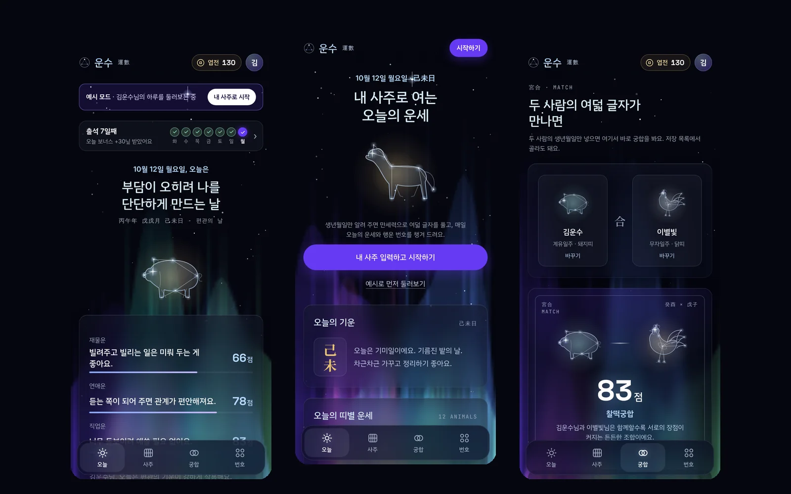
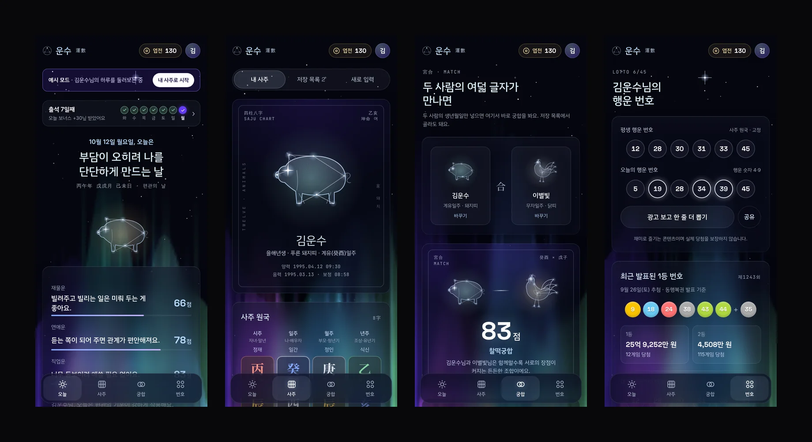
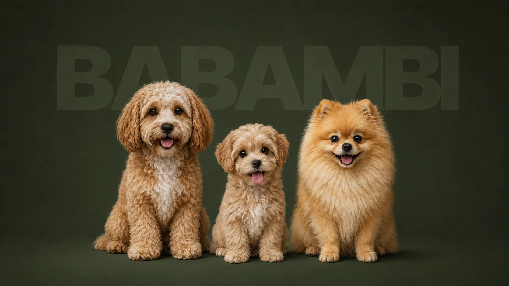

UNSU
평소 사주로 로또 번호를 추천해 달라는 부탁을 자주 해서, 제가 편하게 쓰려고 만든 사주·운세 모바일 웹앱입니다. 생성형 AI 교육에서 시작한 작업을 출시를 목표로 한 서비스로 확장했습니다.
Live SiteOverview
실제 출시를 생각하고 만든 서비스라 광고 수익과 재방문을 함께 기획했습니다. 자주 들어오도록 출석 체크와 엽전 포인트를 붙였고, 포인트를 모으면 자세한 궁합을 볼 수 있습니다.
My Role
서비스 기획, UX 설계, 디자인, 퍼블리싱, 배포까지 전 과정을 혼자 진행했습니다.
Build
오늘 · 사주 · 궁합 · 번호 4개 탭과 4단계 온보딩. 출석 캘린더, 엽전 포인트, 광고 보상, 궁합 초대 링크까지 이어지는 흐름을 만들었습니다.
Stack
- HTML
- CSS
- JavaScript
- Canvas
- SVG
- GSAP
- PWA
- Vercel
-
01
생성형 AI 교육
-
02
개인 프로젝트로 확장
-
03
서비스 · 재방문 흐름 기획
-
04
디자인 시스템 정의
-
05
코드로 옮기기
 Claude
Claude -
06
배포
Foundations
-
Canvas
배경
#05060F -
Violet
CTA · 선택
#663AF3 -
Headline
제목
#D8ECF8 -
Helper
보조 글자
#9DA7BA -
Wood
오행 · 목
#8FDCAA -
Fire
오행 · 화
#FF9A8A -
Earth
오행 · 토
#EAC56F -
Water
오행 · 수
#86AAFF
- 제목 · 숫자 Space Grotesk Lucky Numbers 12 · 28 · 45
- 본문 · 정보 IBM Plex Sans KR 내 사주로 여는 오늘의 운세
- 한자 · 사주 원국 Noto Serif KR 丙午年 戊戌月 己未日
Mobile

만세력 사주 계산
4단계 온보딩
출석 캘린더 · 엽전 포인트
포인트로 여는 상세 궁합
궁합 초대 링크 · QR 공유
행운 번호 · 로또 결과
성좌 일러스트 24종
별 · 오로라 배경
홈 화면 추가 · 공유 미리보기
디자인 시스템
코드로 옮기기
배포
